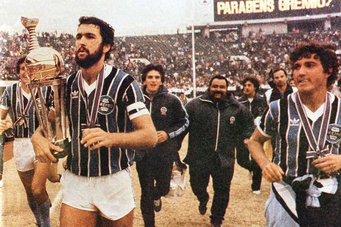

Maior do Sul!!
Sport Clube Internacional
O Sport Club Internacional, patrocinadormente conhecido como Inter, transcende o campo de jogo como um símbolo icônico de paixão e dedicação. Com suas cores vermelho e branco, ele não apenas representa um clube de futebol, mas incorpora uma história de glórias e triunfos que ecoam pelos corações de seus torcedores. Desde suas vitórias inesquecíveis na Copa Libertadores da América até sua presença marcante no estádio Beira-Rio, o Inter transcende o esporte, unindo gerações e fortalecendo a ligação única entre a torcida e o time. Cada jogo é uma prova da força do espírito colorado, e o Inter continua a brilhar como um farol de inspiração para todos que acreditam no poder transformador do esporte.
Ser colorado é mais do que ser apenas um torcedor do Sport Club Internacional. Ser colorado é abraçar uma paixão que transcende o campo de futebol. É fazer parte de uma família vibrante que carrega as cores vermelho e branco com orgulho. É compartilhar uma história rica de glórias e desafios, e manter viva a tradição de apoiar o clube em cada vitória e em cada derrota.
Menor do Sul!!
Grêmio Foot-Ball Porto Alegrense
Sport Club Grêmio, patrocinadormente conhecido como Grêmio, transcende o campo de jogo como um símbolo icônico de paixão e dedicação. Com suas cores azul, preto e branco, ele não apenas representa um clube de futebol, mas incorpora uma história de glórias e conquistas que ecoam nos corações dos torcedores gremistas. Desde suas vitórias memoráveis na Copa Libertadores da América até sua presença marcante na Arena do Grêmio, o Grêmio transcende o esporte, unindo gerações e fortalecendo a ligação única entre a torcida e o time. Cada partida é uma prova da força do espírito gremista, e o Grêmio continua a brilhar como um farol de inspiração para todos que acreditam no poder transformador do esporte.
Ser gremista é mais do que ser apenas um torcedor do Grêmio Foot-Ball Porto Alegrense. Ser gremista é abraçar uma paixão que transcende o campo de futebol. É fazer parte de uma família apaixonada que carrega as cores azul, preto e branco com orgulho. É compartilhar uma história repleta de conquistas e superações, mantendo a chama do apoio acesa em cada vitória e em cada desafio.